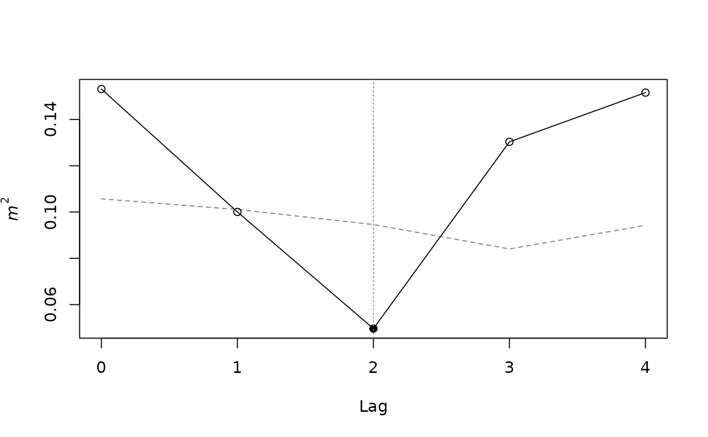

Scans Procrustes concordance between two multivariate series across candidate temporal lags and tests it by permutation at each lag.
Usage
lagged_protest(
X,
Y,
lags = 0:6,
permutation = c("phase", "cyclic", "free"),
nperm = 999,
mirror = TRUE,
bidirectional = FALSE,
scale = TRUE,
p.adjust.method = "none",
period = NULL,
seed = NULL
)Arguments
- X, Y
Numeric matrices or data frames with rows as ordered time points and columns as variables, or
distobjects, which are converted to principal coordinates. Both must have the same number of rows.- lags
Integer vector of non-negative candidate lags.
- permutation
Permutation scheme,
"phase","cyclic"or"free".- nperm
Number of surrogates (
permutation = "phase") or random permutations (permutation = "free"). Ignored for the cyclic scheme, whose permutations are enumerated.- mirror
Logical; with
permutation = "cyclic", also use the time-reversed shifts ofY, doubling the permutation set.- bidirectional
Logical; if
TRUE, also test the negative lags-lags(Y leads X).- scale
Logical; z-score the columns of
XandY(computed on the full series) before analysis. Ignored fordistinputs.- p.adjust.method
Correction of the per-lag p-values for multiple lags:
"maxT"for the single-step max-statistic adjustment, or any method ofstats::p.adjust(). Defaults to"none".- period
Optional length of the seasonal cycle, in rows. If given,
XandYare truncated to their firstfloor(n / period) * periodrows (whole cycles) before analysis; a message reports the rows dropped.NULL(default) uses all rows.- seed
Optional integer seed for the
"phase"and"free"schemes. The global random number stream is left untouched.
Value
An object of class "lagged_protest", a list with:
optimal_lagLag with the smallest \(m^2\).
m2\(m^2\) at the optimal lag.
rProcrustes correlation, \(\sqrt{1 - m^2}\), at the optimal lag.
p.valueRaw permutation p-value at the optimal lag.
p.adjustedP-value at the optimal lag adjusted with
p.adjust.method(equal top.valuewhen"none").p.globalMax-statistic p-value of the scan across lags, accounting for testing several lags and selecting the optimal one.
n_permNumber of permutations or surrogates at the optimal lag (the exact count for the cyclic scheme).
profileData frame with
lag,n(rows used),m2,r,p.value,p.adjustedandnpermfor every lag.residualsData frame of per-observation Procrustes residuals at the optimal lag, with the paired row labels of
XandY.procrustesThe
vegan::procrustes()fit at the optimal lag.nullList of permuted \(m^2\) values, one element per lag; element
iof every vector comes from the same permutation.permutation,p.adjust.method,n,period,callSettings used;
nis the number of rows after any truncation to whole cycles.
Details
Rows of X and Y are ordered time points (e.g., monthly centroids) and
must correspond one to one. At lag k > 0, X at time t is paired with
Y at time t + k (X leads Y), and the series are truncated to the
overlapping window of n - k rows. Negative lags (Y leads X) are tested
when bidirectional = TRUE. The statistic at each lag is the symmetric
Procrustes sum of squares \(m^2\) from vegan::procrustes(); the lag of
maximal concordance is the one with the smallest \(m^2\).
Three permutation schemes are available:
"phase"(default):npermphase-randomized surrogates ofYare drawn. Each surrogate keeps the amplitude spectrum of every column ofY(hence its autocorrelation) and the cross-spectra among its columns, but receives new Fourier phases, shared by all columns. Surrogates are applied jointly to all lags and do not reproduce the observed alignment, which makes this the recommended scheme for the global p-value. It assumes a stationaryYand treats the series as periodic with periodn. In simulations, it was liberal for short, strongly autocorrelated series (AR(1) of 0.7 or more withnof 48 or less)."cyclic": the fullYseries is cyclically shifted by1, ..., n - 1positions before lagging, and optionally also time-reversed (mirror = TRUE). This keeps the temporal autocorrelation ofYunder the null. Alln - 1(or2(n - 1)) shifts are enumerated, sonpermandseedare ignored, and the smallest attainable p-value is1 / (2(n - 1) + 1)(0.043 forn = 12withmirror = TRUE). The scheme assumes the series spans complete cycles, i.e., that its period matches the number of rows (e.g., 12 monthly samples of an annual cycle). Because a shift ofYcombined with lagkis equivalent to another lag, some shifts reproduce the observed alignment at other lags; the global p-value (see below) is then valid but has low power."free": rows ofYare permuted at random within the overlapping window, as invegan::protest(). This assumes exchangeable rows and can strongly inflate Type I error when both series are autocorrelated.
Both the phase and the cyclic schemes treat the series as periodic with
period n. When the series contains a seasonal cycle whose length does
not divide n (e.g., 18 monthly samples of an annual cycle), no scheme is
calibrated, because two series sharing a period are Procrustes-concordant
whatever their phase. Supplying period truncates both series to their
first floor(n / period) * period rows, so that the analysis spans whole
cycles. In simulations, this restored the Type I error of series that
already spanned complete cycles, whereas removing the seasonal component
by harmonic regression did not.
P-values are computed as (b + 1) / (N + 1), where b is the number of
permuted \(m^2\) values smaller than or equal to the observed one and
N the number of permutations. Each permutation is applied jointly to all
lags.
The per-lag p-values (p.value) are not corrected for testing several
lags, nor for selecting the lag with the smallest \(m^2\). Reporting the
raw p-value at the optimal lag therefore inflates Type I error roughly to
the rate at which any lag is significant. The global p-value (p.global)
accounts for both: it compares the observed minimum \(m^2\) across lags
with the distribution of the minimum across lags under each permutation
(a max-statistic test), so it is the p-value of the whole
scan-and-select procedure and is the one to report for the optimal lag.
With p.adjust.method = "maxT", every lag receives the corresponding
single-step max-statistic adjusted p-value, and the adjusted p-value at
the optimal lag equals p.global. Any method of stats::p.adjust() can be
requested instead; with few permutations, as in the cyclic scheme,
corrections such as Holm may make significance unattainable. Note that
\(m^2\) values at different lags are based on different numbers of rows
(n - |k|).
Examples
sim <- simulate_lagged_series(n_times = 12, true_lag = 2, noise_sd = 0.3,
seed = 1)
fit <- lagged_protest(sim$X, sim$Y, lags = 0:4, seed = 1)
fit
#>
#> Lagged PROTEST
#>
#> Call: lagged_protest(X = sim$X, Y = sim$Y, lags = 0:4, seed = 1)
#> Permutation: phase-randomized surrogates; n = 12 time points
#> P-value adjustment across lags: none
#>
#> Optimal lag: 2 (m2 = 0.0496, r = 0.975, p = 0.001)
#> Global p across lags (max-statistic): 0.004
#>
#> Lag profile:
#> lag n m2 r p.value nperm
#> 0 12 0.1532 0.920 0.969 999
#> 1 11 0.1000 0.949 0.145 999
#> 2 10 0.0496 0.975 0.001 999
#> 3 9 0.1303 0.933 0.725 999
#> 4 8 0.1516 0.921 0.850 999
#> Per-lag p-values are not corrected for testing several lags or for selecting
#> the optimal lag; report the global p for the optimal lag.
fit$p.global
#> [1] 0.004
fit_cyclic <- lagged_protest(sim$X, sim$Y, lags = 0:4,
permutation = "cyclic")
fit_cyclic$profile
#> lag n m2 r p.value p.adjusted nperm
#> 1 0 12 0.15315445 0.9202421 1.00000000 1.00000000 22
#> 2 1 11 0.10003719 0.9486637 0.08695652 0.08695652 22
#> 3 2 10 0.04963006 0.9748692 0.04347826 0.04347826 22
#> 4 3 9 0.13033905 0.9325561 0.73913043 0.73913043 22
#> 5 4 8 0.15160634 0.9210829 0.91304348 0.91304348 22
plot(fit)

residuals(fit)
#> x_row y_row residual
#> 1 1 3 0.08219361
#> 2 2 4 0.08428298
#> 3 3 5 0.03545903
#> 4 4 6 0.07590098
#> 5 5 7 0.05382336
#> 6 6 8 0.05169356
#> 7 7 9 0.07466031
#> 8 8 10 0.06927409
#> 9 9 11 0.07813342
#> 10 10 12 0.08188577